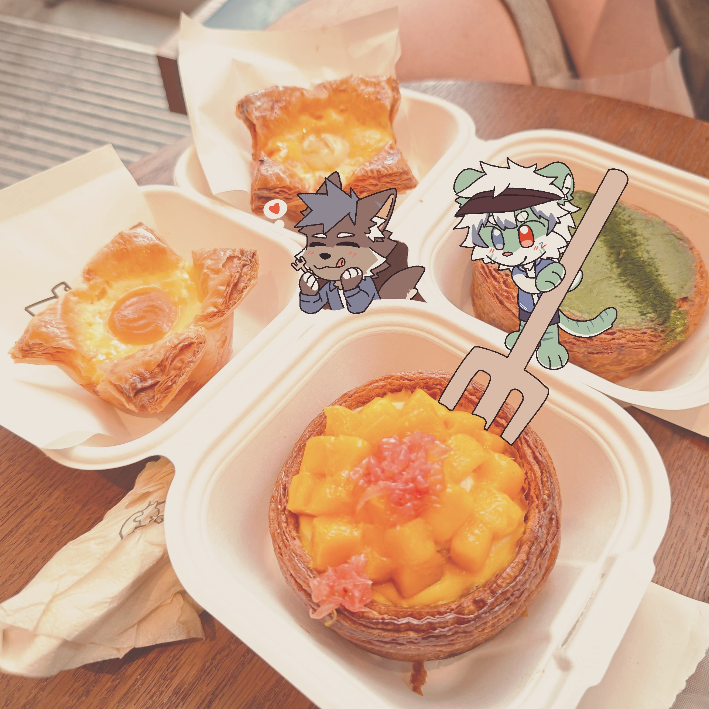

给访客
不用理解全部设定，也能快速找到喜欢的角色和商品。
About
头头咖啡屋把 furry 角色、日常图像和周边想象放在同一个空间里。访客可以先被气氛留下，再找到角色，再决定要不要把一小块喜欢带走。
Tito's Cafe
轻盈、亲切、少一点喊卖，多一点停留。首页像招呼，角色页像介绍朋友，周边页像柜台，图库页像作品集。
后续补图时，只要按角色名、Avatar、Stand、Sketch Set、Sticker、Photo 等命名，就能继续放进现有分类。

不用理解全部设定，也能快速找到喜欢的角色和商品。
素材、角色、商品和专题都留有扩展口，后续加图不会推翻结构。
优先呈现设定完整度、角色辨识度和页面动线，不用靠大段解释支撑。
Credits
当前页面使用 TSURU 绘制素材。credit 保持克制，只在必要位置出现，让作品本身成为主角。